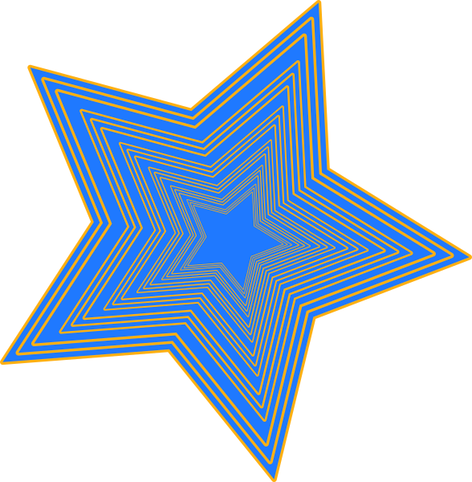

 home
home
This is a very fun and interesting assignment. I learned a lot about the different transform properties and how to use them. I experimented different transform properties such as scale, skew, translate, and rotate on the stars. Watching them move around the page on live port was very funny. However, I think I added a little too much transformation and it made my page very laggy. My laptop even crashed once. Overall, I had a lot of fun doing this assignment. I would like to do more assignments like this in the future.